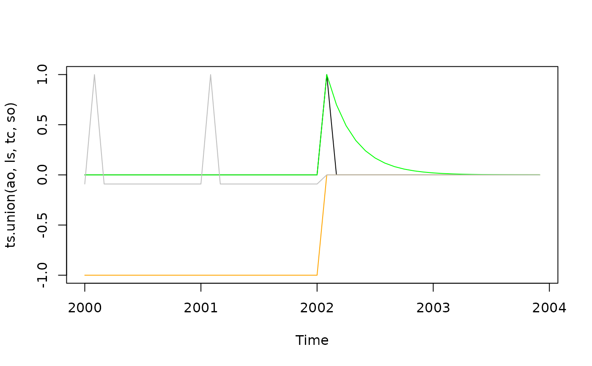

Generating Outlier regressors
Usage
ao_variable(frequency, start, length, s, pos, date = NULL)
tc_variable(frequency, start, length, s, pos, date = NULL, rate = 0.7)
ls_variable(frequency, start, length, s, pos, date = NULL, zeroended = TRUE)
so_variable(frequency, start, length, s, pos, date = NULL, zeroended = TRUE)Arguments
- frequency
Frequency of the series, number of periods per year (12,4,3,2..)
- start, length
First date (array with the first year and the first period) (for instance
c(1980, 1)) and number of periods of the output variables. Can also be provided with thesargument- s
time series used to get the dates for the trading days variables. If supplied the parameters
frequency,startandlengthare ignored.- pos, date
the date of the outlier, defined by the position in period compared to the first date (
posparameter) or by a specificdatedefined in the format"YYYY-MM-DD".- rate
the decay rate of the transitory change regressor (see details).
- zeroended
Boolean indicating if the regressor should end by 0 (
zeroended = TRUE, default) or 1 (zeroended = FALSE), argument valid only for LS and SO.
Details
An additive outlier (AO, ao_variable) is defined as:
$$AO_t = \begin{cases}1 &\text{if } t=t_0 \newline
0 & \text{if }t\ne t_0\end{cases}$$
A level shift (LS, ls_variable) is defined as (if zeroended = TRUE):
$$LS_t = \begin{cases}-1 &\text{if } t < t_0 \newline
0 & \text{if }t\geq t_0 \end{cases}$$
A transitory change (TC, tc_variable) is defined as:
$$TC_t = \begin{cases} 0 &\text{if }t < t_0 \newline
\alpha^{t-t_0} & t\geq t_0 \end{cases}$$
A seasonal outlier (SO, so_variable) is defined as (if zeroended = TRUE):
$$SO_t = \begin{cases} 0 &\text{if }t\geq t_0 \newline
-1 & \text{if }t < t_0 \text{ and $t$ same periode as }t_0\newline
-\frac{1}{s-1} & \text{otherwise }\end{cases}$$
Examples
#Outliers in February 2002
ao <- ao_variable(12, c(2000,1), length = 12*4, date = "2002-02-01")
ls <- ls_variable(12, c(2000,1), length = 12*4, date = "2002-02-01")
tc <- tc_variable(12, c(2000,1), length = 12*4, date = "2002-02-01")
so <- so_variable(12, c(2000,1), length = 12*4, date = "2002-02-01")
plot.ts(ts.union(ao, ls, tc, so), plot.type = "single",
col = c("black", "orange", "green", "gray"))
